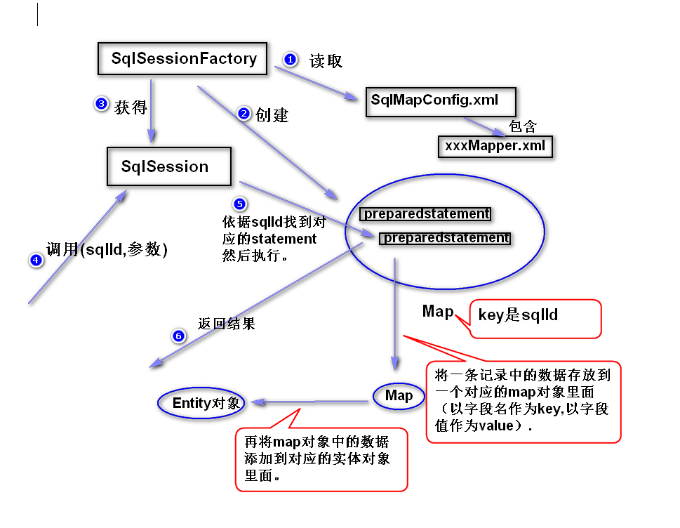
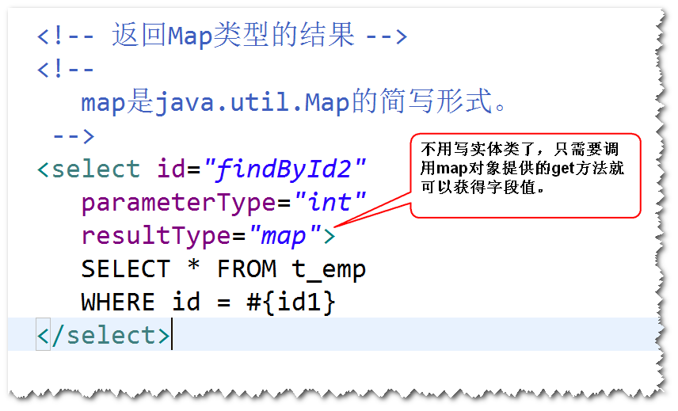

注：
a.SqlSessionFactory通过读取MyBatis配置文件(SqlMapConfig.xml),
创建一个Map（key是sql的id,值是PreparedStatement对象)。
b.调用SqlSession对象提供的方法来执行sql,SqlSession对象会依据
sqlId在Map中找到对应的PreparedStatement对象，然后执行相应的
方法（比如executeUpdate等）。
c.如果执行的是查询，对结果的处理分两步。第一步是将一条记录中存放
的数据先添加到一个对应的Map对象里面（以字段名作为key,以字段值
作为value）。第二步，会将Map对象存放的数据添加到对应的实体对象
里面（这也是为什么要求实体类的属性名必须与表的字段名要求一致的
原因）。

以属性名作为字段名的别名
select id empNo,name ename,salary,age FROM ...
是一个符合映射文件要求的接口。
注：MyBatis会自动生成一个符合该接口要求的对象，只需要
调用该对象的方法，就可以访问数据库。

a. 方法名必须跟sqlId一样。
b. 参数类型必须跟parameterType一样。
c. 返回值的类型必须跟resultType一样。

d. 映射文件namespace必须等于接口名。